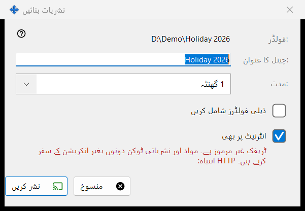
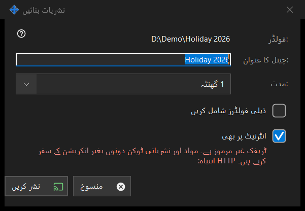

نشریات بنائیں
یہ کس مقصد کے لیے ہے
ایک نشریات بننے سے پہلے اس کی ترتیب طے کرتا ہے: اس کا عنوان، وہ کتنی دیر رہے گی اور آیا وہ مقامی نیٹ ورک سے باہر پہنچے گی۔ یہ منتخب فائل یا فولڈر کے لیے نشریات ونڈو میں ..نشریات بنائیں سے کھلتا ہے۔ جب تک آپ نشر کریں نہ دبائیں، کچھ بنایا یا بھیجا نہیں جاتا۔


اس ترتیب میں
- پہلی لائن میں راستہ دیکھیں (:فولڈر یا :فائل)۔
- :چینل کا عنوان میں ترمیم کریں؛ یہ فولڈر یا فائل کے نام سے شروع ہوتا ہے۔
- :مدت چنیں۔
- فولڈر کے لیے اگر ذیلی فولڈر چاہئیں تو ذیلی فولڈرز شامل کریں پر نشان لگائیں۔
- انٹرنیٹ پر بھی کو رہنے دیں یا ہٹا دیں۔
- نشر کریں (Enter) یا منسوخ (Escape) دبائیں۔
عناصر
عنوان اور مدت
چینل کا عنوان وہ نام ہے جو نشریات کی فہرست دکھاتی ہے۔ مدت میں 24 گھنٹے (ڈیفالٹ)، 1 گھنٹہ، 7 دن اور منسوخ ہونے تک کا انتخاب ہے؛ آخری کی کوئی اختتامی تاریخ نہیں ہوتی اور وہ تب تک رہتی ہے جب تک آپ اسے نشریات ونڈو میں منسوخ نہ کریں۔
ذیلی فولڈرز شامل کریں
صرف تب دکھائی دیتا ہے جب ہدف فولڈر ہو، اور بطور ڈیفالٹ بند ہوتا ہے۔ یہ طے کرتا ہے کہ نشر کیے جانے والے فولڈر کے ذیلی فولڈروں کی فائلیں شامل ہوں گی یا نہیں۔
انٹرنیٹ پر بھی
نشان زد ہوتا ہے، سوائے اس کے کہ شیئرنگ کی ترتیبات برآمدات کو صرف مقامی نیٹ ورک تک محدود رکھیں۔ نشان زد ہونے پر لنک میں مقامی پتے کے ساتھ اس پی سی کے IPv6 اور پورٹ فارورڈ کیے گئے انٹرنیٹ پتے بھی ہوتے ہیں، اگر وہ معلوم ہوں۔ نشان لگانے سے مدت 24 گھنٹے سے 1 گھنٹے پر آ جاتی ہے (آپ اسے واپس بدل سکتے ہیں) اور ایک سرخ انتباہ دکھائی دیتا ہے: HTTP ٹریفک انکرپٹ نہیں ہوتی، اس لیے مواد اور نشریات کا ٹوکن بغیر انکرپشن کے سفر کرتے ہیں۔ جس کے پاس لنک ہو وہ میعاد ختم ہونے یا منسوخ ہونے تک نشریات کی فائلیں پڑھ سکتا ہے۔ نشریات کو مقامی نیٹ ورک کے اندر رکھنے کے لیے خانے سے نشان ہٹا دیں۔
نشر کریں اور منسوخ
نشر کریں صرف آپ کے انتخاب نشریات ونڈو کو واپس دیتا ہے، جو پھر نشریات بناتی ہے اور اس کا لنک کاپی کرتی ہے۔ منسوخ ڈائیلاگ بند کر دیتا ہے اور کچھ نہیں بناتا۔
مینیجر کی ترتیبات · SFTP اشتراک کی ترتیبات · ایکسچینج سرور کی ترتیبات